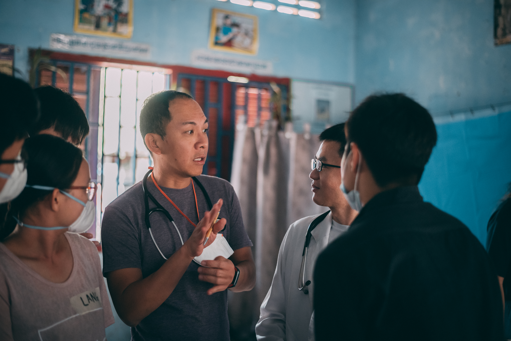
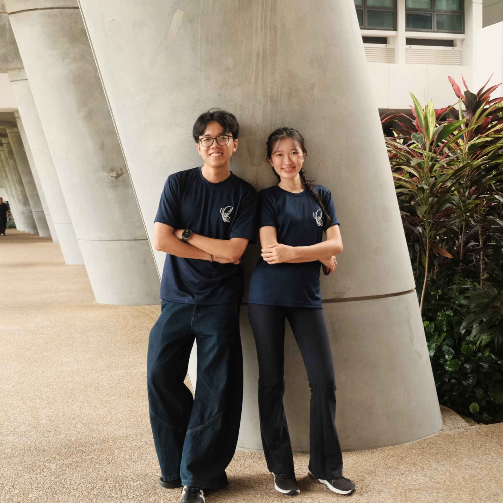
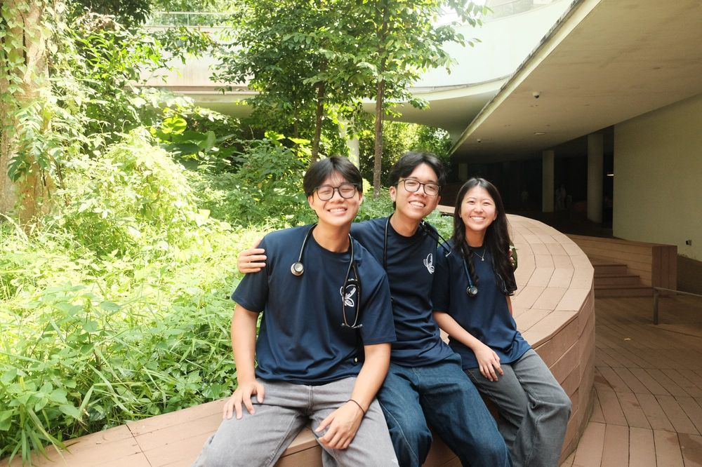
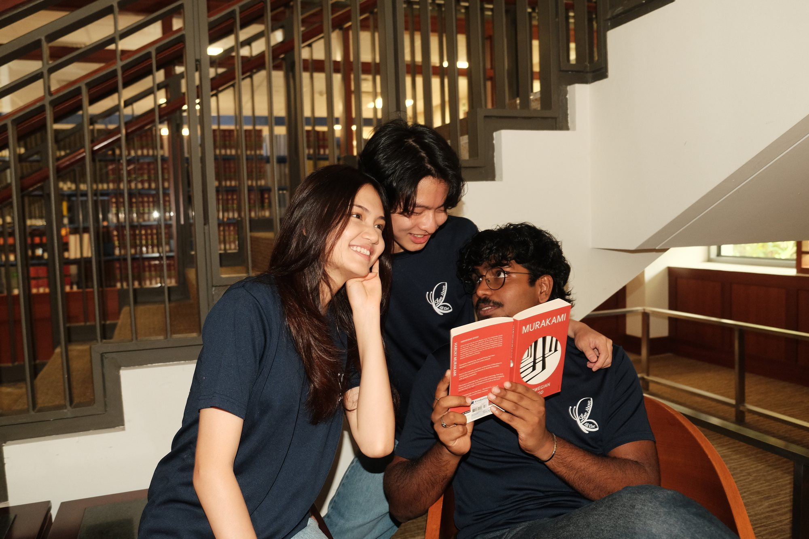
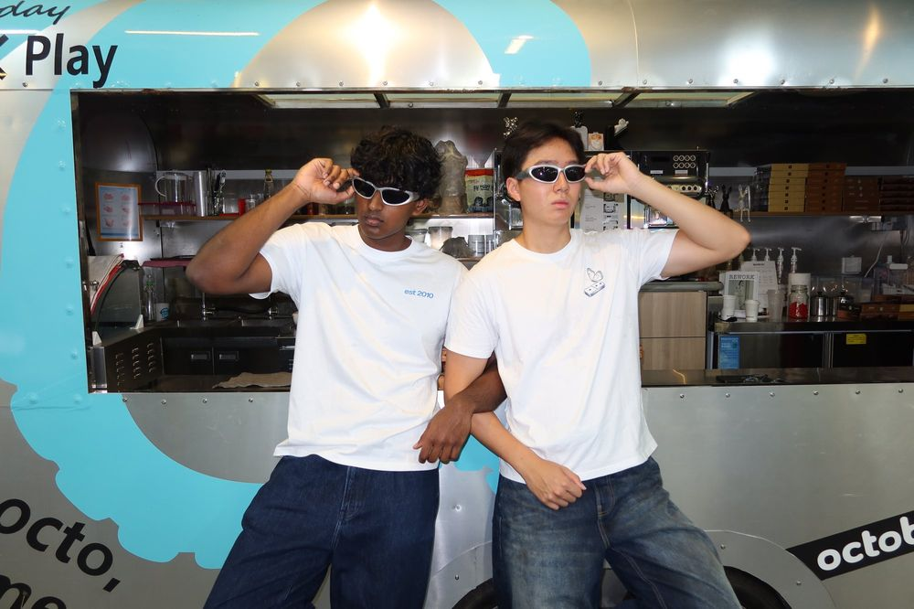
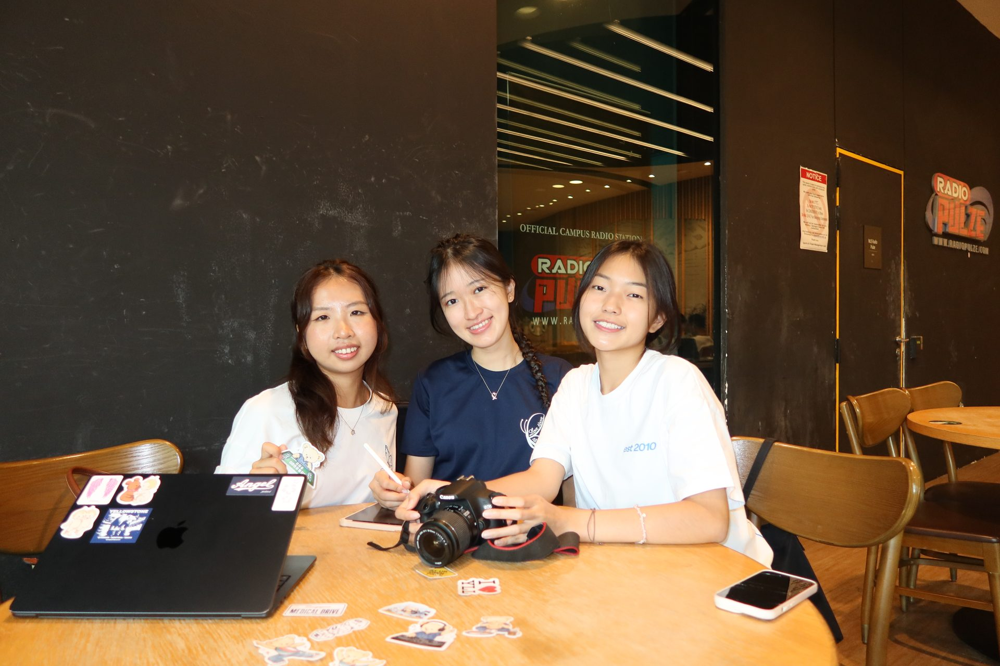

Our committee comprises passionate medical students from NUS Yong Loo Lin School of Medicine, supported by healthcare advisors, doctors, and community partners.

Palliative Care Physician and former Medical Director of the Singapore Cancer Society. Dr Ong has mentored Project Battambang since its inception in 2010, advocating for holistic community support beyond medical aid.

Overseeing all sub-committees and spearheading the strategic direction, international partnerships, and logistical execution for Project Battambang.

Anchoring operational mass health screenings, clinical triage procedures, hospital referral pathways, pharmacy management, and volunteer physician coordination.

Delivering sustainable, year-round aid through health education modules, school hygiene projects, and the Light-A-Dream Scholarship.
Planning long-term project sustainability, evaluating existing initiatives, and conducting on-ground surveys on villager health-seeking behaviors.

Managing facility bookings, transport logistics, inventory control, medication supply chains, and mobile pharmacy operations.

Maintaining sponsor relations, fundraising, safe-keeping project funds, budgeting transparency, and managing project publicity.